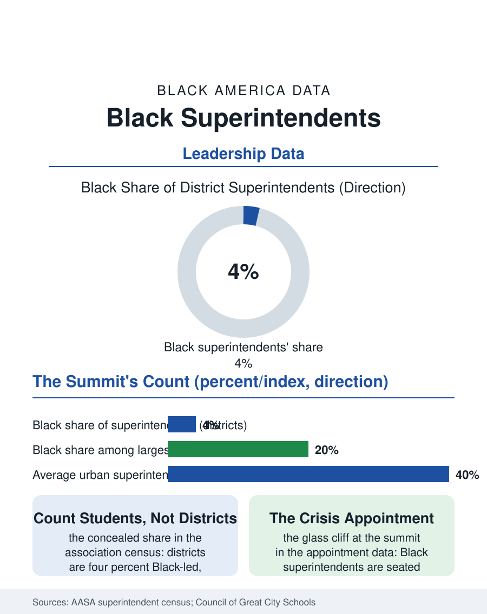

Black Education
The Summit: Black Superintendents
Four percent of districts, a fifth of the largest, appointed in crisis and turned over fastest: the summit's file. The superintendency file.

The superintendent is public education's chief executive, and Black superintendents lead roughly four to five percent of the nation's thirteen thousand districts, a share that rises in the urban systems, where a substantial fraction of the largest districts are Black-led, and vanishes across the suburban and rural map where most districts sit. This article reads the superintendency file.
The Urban Chair and the Empty Map
The profession's own census, conducted by the national association across the decades, draws the map's two facts in one table: the typical American district is small, suburban or rural, and white-led at rates above the ninety percent mark, while the hundred largest districts, enrolling a hugely disproportionate share of the nation's Black students, appoint Black superintendents at several times the national rate, so that the Black student's probability of a Black superintendent is far higher than the district count suggests, a student-weighted share the census reports and the headline figure conceals. The appointment's politics are the governance file's purest form: the elected or appointed school board hires and fires the superintendent in public, and the search process, the firms' slates, the community forums, the board's factional arithmetic, composes a process in which the Black candidate's file is read against the district's crisis of the moment, the glass cliff of the principals file operating at the system's summit, the Black superintendent disproportionately appointed to the district in fiscal or academic receivership's shadow, with the contract's term and the board's patience rationed in the pattern the tenure data then record.
Tenure, Pay, and the Revolving Door
The tenure file is the superintendency's scandal in every demographic: the average urban superintendent's tenure runs under four years in the councils' data, a churn that makes the office a project begun and abandoned on the electoral cycle's schedule, and the Black superintendent's tenure in the state records runs shorter than the white peer's in the same district class, the difference composed of the appointment context, the board's composition changes, and the buyout file, the contract's severance being the door's price in the districts that can afford to pay it and the career's tax in those that record it. The pay data follow the district's wealth more than the leader's demographics, the suburban superintendency's package exceeding the larger urban system's in the states' published salaries in a pattern that inverts the responsibility's scale, while the pipeline beneath the chair, the deputy and area superintendencies of the central office, posts the fuller Black share of the central administration files, the funnel narrowing at the final interview in the pattern of every executive file in this atlas. The preparation file, the superintendent academies and the doctoral programs of the universities, enrolls the aspiring tier at fuller diversity than the chairs it feeds, the aspiration's surplus being the file's standing measure of the appointment system's throughput.
The Summit's Meaning
The superintendency file closes on the office's distinctive visibility, because the superintendent is the school system's public name, the face at the levy campaign and the crisis podium, and in the Black-led urban district that face is the community's own officer at the system's summit, a fact whose weight the students' and the staff's accounts register in the qualitative record as plainly as the principals file's door. The current era's file adds the office's exposure: the superintendent as the lightning rod of the curriculum and closure contests, the state interventions into the Black-led urban districts that the governance literature debates in the receiverships' own terms, and the profession's association data recording a turnover wave in the office across all demographics in the recent years, the chair emptying faster than the pipeline was built to fill. The association counts the chairs at four to five percent and the student-weighted share several times higher. The file's last entry is the board meeting's vote, taken in public at the long table, by which the system's summit changes hands: the count of those votes that have seated a Black superintendent in the small districts of the empty map is the file's unfinished business, because the urban chair, for all its weight, is one district at a time, and the nation's thirteen thousand tables are where the census's four percent is actually decided.
More in Black Education
Black Educational Attainment: High School Parity, the College Gap
About 89 percent of Black adults hold a high school diploma and one in four holds a bachelor's degree or higher — the attainment ladder, the college completion gap, and the generational trend.
Historically Black Colleges and Universities: Enrollment and Degrees
More than 100 HBCUs enroll roughly 290,000 students and award about one in six Black bachelor's degrees — an outsized share from a small sector. The federal education data.
Black College Enrollment: 2.4 Million Students
About 2.4 million Black students are enrolled in American colleges — nearly two-thirds of them women. The NCES enrollment data by sector, level, and trend.
Source: American Association of School Administrators decennial superintendent studies; Council of the Great City Schools leadership data.